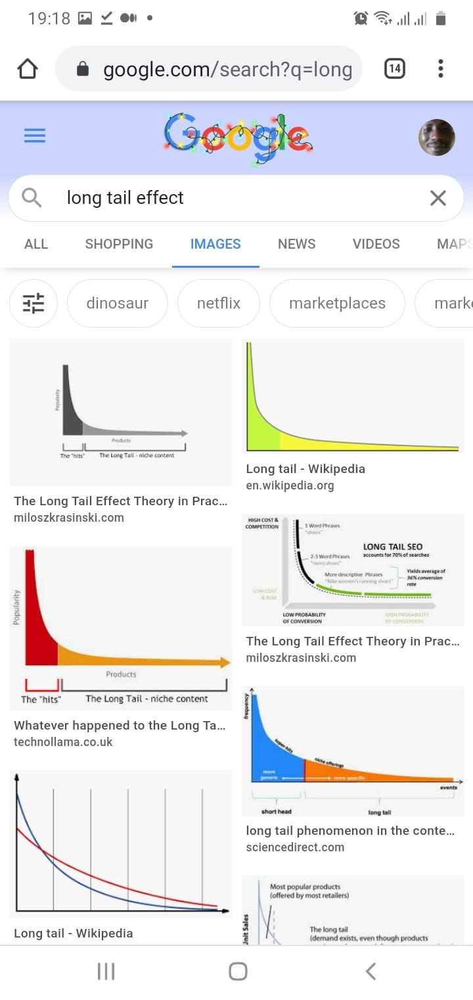

The tail of the long tail curve business model theory

The filtering system and recommendation systems that made the big marketplace like Amazon or eBay or Alibaba... That use the long tail infinite size of the catalog and an almost infinite number of products end up being a tool against new products discovery and trend reversing. What if you could just build a marketplace that just displays the tail of other marketplaces I mean all these products that aren’t shown and promoted due to the power of the online democratic way of ranking driven by consumers. Will you end up seeing people buy few products from this tail and drip by drip you see a new trend forming because the sales of those few products will Fire a signal to others to buy them. People always buy what others buy. Are filtering and recommendation a tool for positioning an online marketplace? My response is yes and theory proves this fact. We need to make an experiment to see but for sure new hits and best seller products will race from the bottom of the tail to the head of this long tail curve just because we the changed filtering and recommendation system strategy.
This is a Business modeling framework of the digital ear that apply to everything ranging from physical to virtual product and services.
Show there what is not shown away is the mantra of modeling such kind businesses
